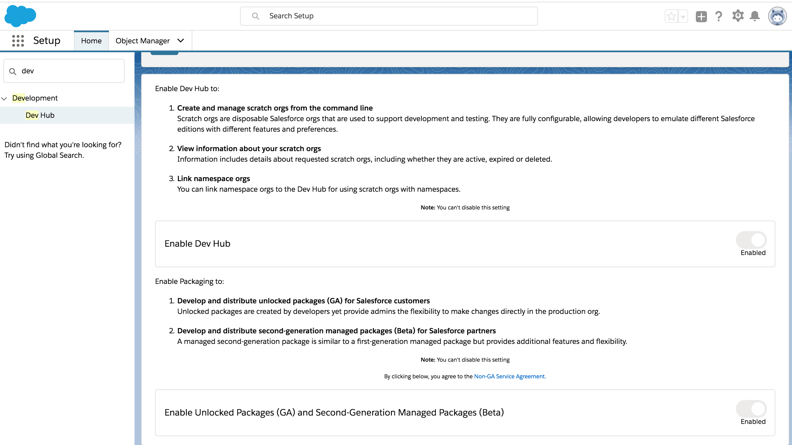

What’s a Package?
- Package is a container that you fill with metadata.
- Use packages to move the metadata from one location to another. Each second-generation package has a distinct life cycle.
- Snapshot: We call the snapshot a package version. As you add, remove, or change the package metadata, you can create another snapshot, called a package versions.
- The package version can be installed in a scratch org, sandbox org, DE org, or production org. Installing the package is similar to deploying metadata.
- Upgrade: you can install a new package version into the same org through a package upgrade.
- Cycle
- Change metadata
- Create a package version
- Test the package version
- Finally deploy or install the package to a production org.
- Use Salesforce DX projects to organize your source into package directories
- Create packages using those directories that are version-able, easy to maintain, update, install, and upgrade.
- With unlocked packages, developers can more easily develop and deploy their apps and functionality.
Help Enterprise developers to easily develop and deploy their apps and functionality

- Organize the unpackaged metadata in your production org into well-defined packages.
- These packages are version-able and easy to maintain, update, install, and upgrade.
- When your “happy soup” of metadata is organized into packages, updates and customizations are much easier to manage across your development team.
Help Enterprise developers to easily develop and deploy their apps and functionality

Second-Generation Packaging
- Allows customers and system integrators (SI) to create packages in a source-driven development environment
- Packages that are built directly from the source.
- You can create and deploy packages in your own Salesforce org or develop and distribute packages to your customers
- The Salesforce CLI provides commands for the entire application life cycle so you can work efficiently with your packages, scratch orgs, and development processes.
- Options for enterprise customers to organize and deploy metadata to production orgs.
- Multiple packages per namespace, so you can better organize your source and easily share Apex code. You can use public Apex classes across packages rather than global Apex classes.
- Feature branch development and testing
- Namespace : Link the name of each package to Dev Hub Org
#----- in sfdx-project.json "namespace": "GreenCorp"
- Check out the metadata of the package from version control system (VCS)
- Authenticate the Dev Hub org
- Create Scratch Org
- Push source to the Scratch Org and update source in Scratch org as needed
- Convert source format to metadata format
sfdx force:source:convert --outputdir mdapi_output_dir --packagename managed_pkg_name #----- review the contents of the mdapi_output_dir ls -lR mdapi_output_dir #----- Authenticate the packaging org sfdx force:auth:web:login --setalias MyPackagingOrgAlias #----- Deploy the package metadata back to the packaging org sfdx force:mdapi:deploy --deploydir mdapi_output_dir --targetusername me@example.com #----- Check the status of the deployment sfdx force:mdapi:deploy:report #----- Create the beta version of the package sfdx force:package1:version:create --packageid package_id --name package_version_name #----- List package version to install sfdx force:package1:version:list #----- Install package sfdx force:package:install --package 04txx000000069zAAA #----- After your testing is done, your app is almost ready to be published in your enterprise or on AppExchange. # Generate a new managed package version in your Dev Hub org # Include the --managedreleased parameter to create the managed package sfdx force:package1:version:create --packageid 04txx000000069zAAA --name ”Spring 19” --description ”Spring 19 Release” --version 3.2 --managedreleased #----- View information about a package force:package1:version:display -i 04txx000000069yAAA